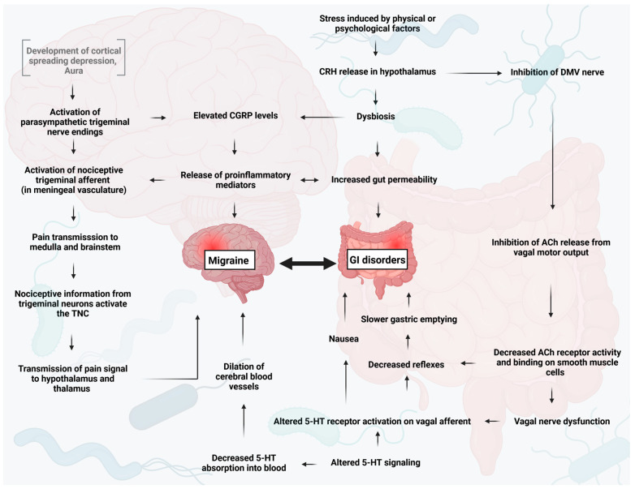

Q1. Melhor antiemético-âncora na crise aguda de enxaqueca:
Comparação chocante
Enjoo, Plasil e dexa 4 mg
Ondansetron popular × metoclopramida âncora; dexa 4 mg ≠ profilaxia.
Ondansetron ruim
Além da analgesia, trata-se náusea/vômito. Ondansetron não é a melhor escolha na enxaqueca: atua em vias pouco ligadas à gastroparesia e pode causar cefaleia de rebote. É popular no dia a dia — mas não é a âncora aqui.
Metoclopramida âncora
Grande droga: metoclopramida (Plasil). Clorpromazina pode entrar em crise refratária (também combate gastroparesia). Antieméticos (metoclopramida, clorpromazina) têm propriedades analgésicas. Em tese, é possível tratar só com metoclopramida. Em prova, o clássico é triptano + metoclopramida; já houve questão em que a resposta foi só metoclopramida. Se a pergunta for náusea/vômito e as opções forem triptano isolado vs metoclopramida: triptano só deixa vomitando; metoclopramida reduz vômito e ajuda na dor.
Dexa 4 mg — recorrência precoce
Para reduzir recorrência precoce (voltar em 1–2 dias): dexametasona 4 mg IV em dose única. Não para todo mundo — reservar a crises graves/refratárias.
≠ profilaxia
Recorrência precoce (1–2 dias) ≠ profilaxia de longo prazo das primárias.
Bordão
Forte → triptano; enjoo → metoclopramida; amanhã → dexa 4 mg.

Spekker E, Nagy-Grócz G. Neurol Int. 2023;15(3):1174–1190 — CC BY 4.0 · DOI 10.3390/neurolint15030073 · fonte
Enjoo que nasce do estômago parado
A migrânea desacelera o esvaziamento gástrico — o enjoo vem daí. Por isso a metoclopramida, que acelera trânsito e ainda tem efeito analgésico, é o antiemético-âncora.
Quiz
Q2. Dexametasona 4 mg IV na enxaqueca serve principalmente para: